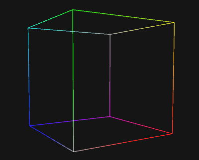

CrossSection4
Cross Section projection projects higher dimensional object by cutting it to a lower dimension.

Most of the cases you'll see that the projected model is look like its downgraded version (e.g. tesseract -> cube).
Visualization Depedency
| When renderer need # (visualization type) | It needs # (simplex shape) |
|---|---|
| Particle | Line |
| Wire | Triangle |
| Solid | Tetrahedron |
Properties
This projection doesn't have any meaningful property.
Suitable Usage
Cross Section is suitable for games that likes to preserve 3D behaviour but allows the player to roam into 4th dimension as well. It's generally and computationally simpler than frustum projection.
Tip
Because of its simplicity, Cross Section is also considered the default projection mode for any new Viewer4.